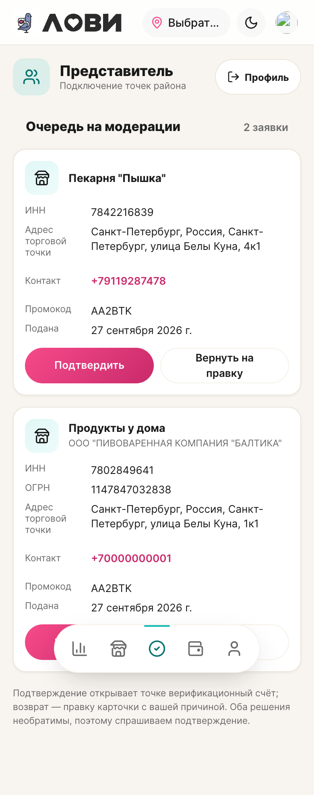
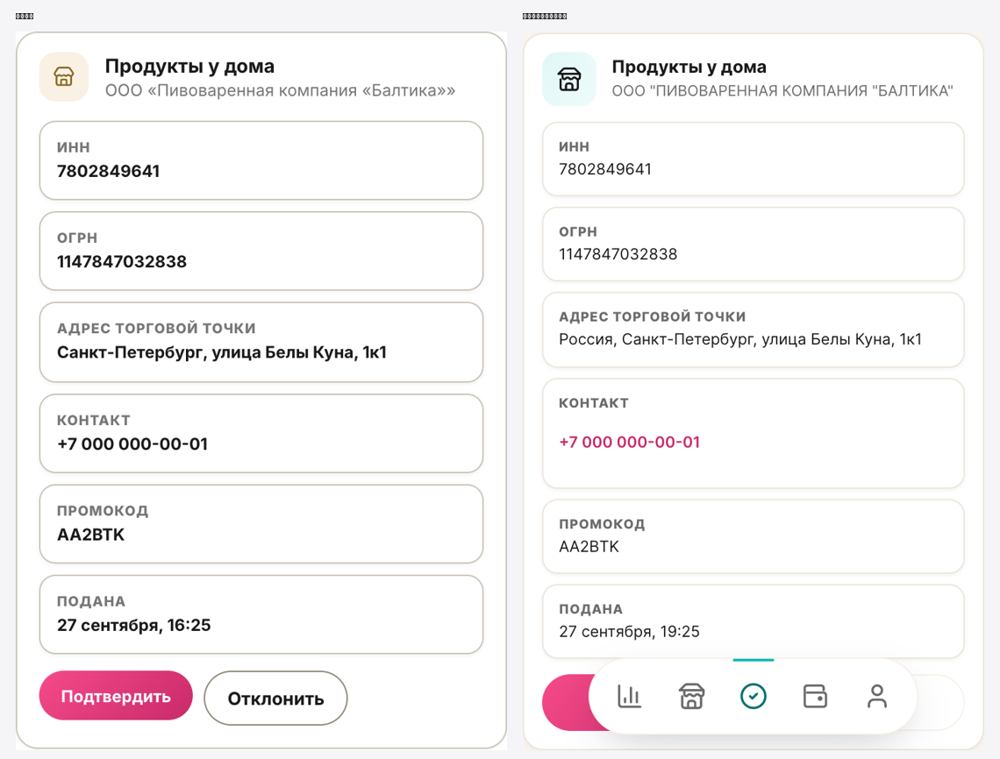
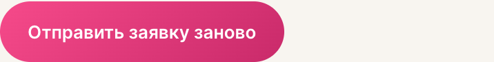
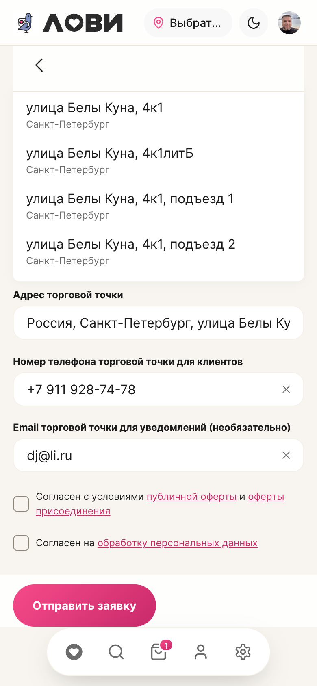

Согласованный вид карточки внесён в приложение; добавлены поля API, чтобы владелец МСП видел юрлицо и причину отказа.
| Слой | Файл | Что |
|---|---|---|
| Ядро | PartnerApplicationApprovalResource | отдаёт legal_name, legal_name_full, ogrn из снимка DaData |
| Ядро | PartnerApplicationResource | отдаёт владельцу rep_reject_reason и rep_rejected_at |
| Приложение | RepresentativeApprovals.vue | карточка: мерчант крупно, юрлицо под ним; поля ИНН · ОГРН · Адрес торговой точки · Контакт · Промокод · Подана; бейдж статуса убран |
| Приложение | MspOverview.vue | блок «Заявка №…» показывает «Причина отказа: …» |
| Приложение | BusinessResult.vue | экран «Не удалось подтвердить точку» показывает причину от представителя |
| Типы | roles-api.ts · business-api.ts | добавлены ogrn, rep_reject_reason, rep_rejected_at |
| Проверка | Результат |
|---|---|
| API апрува возвращает юрлицо | #30 → «ООО "ПИВОВАРЕННАЯ КОМПАНИЯ "БАЛТИКА"», ОГРН 1147847032838 |
| Экран апрува в приложении | мерчант сверху, юрлицо под ним; поля на месте; бейджа нет |
| Перекрытие нижней навигацией | нет (карточка до 692px, навигация с 772px) |
| Типы | type-check зелёный |
| Юнит-тесты | 339/340 зелёные; 1 падает до моих правок — roles-msp.test.ts про кнопку «Добавить товар» (расхождение на ветке, не связанное с этой правкой) |

Набор и порядок полей сведены, вид карточки приведён к одному эталону (демо — источник дизайна, приложение приведено к нему).
| Что | Как |
|---|---|
| Поля и порядок | ИНН · ОГРН · Адрес торговой точки · Контакт · Промокод · Подана — одинаково |
| Пустой ОГРН | показываем «—» (было скрытие) |
| Колонки | одна колонка до 430px, две выше — как в демо |
| Телефон | в маске «+7 000 000-00-01» (было сырое E.164) |
| Дата | с временем «27 сентября, 16:25» (было без времени) |
| Адрес | убран дубль города («Санкт-Петербург, Россия, Санкт-Петербург…») |
| Кнопки | «Подтвердить» / «Отклонить» в обоих (в приложении было «Вернуть на правку») |
| Плитка, жирность | единый тон плитки и вес значений |
| Карточка в демо | радиус приведён к токену ДС (было 18px литералом) |
Остаточные отличия — данные, не дизайн: регистр/кавычки юрлица из DaData, префикс «Россия» в адресе, фактическое время создания.

Раньше после отказа вернуться в форму можно было только с экрана статуса. Добавил кнопку «Отправить заявку заново» прямо в кабинет МСП — в блок отказанной заявки.
| Где | Что |
|---|---|
| Кабинет МСП → блок «Заявка №…» (статус «Не удалось подтвердить точку») | кнопка «Отправить заявку заново» → форма заявки |
| Экран статуса /business/status | та же кнопка (была и раньше) |
| Что подставляется в форму | ИНН из последней заявки (правится) + телефон и e-mail из профиля. Название точки и адрес — заполняются заново (канон «ЛОВИ Бизнес» §9.5) |
| Повторная подача | создаёт новую заявку; отклонённая остаётся закрытой |
Проверено кликом: кнопка ведёт на /business/apply, в поле ИНН уже стоит 7842216839 (из отклонённой заявки).

Раньше форма возвращала только ИНН. Теперь подставляются все данные прошлой заявки — название точки, адрес (вместе с координатами), телефон, e-mail.
| Поле | Источник |
|---|---|
| Название точки | прошлая заявка |
| ИНН | прошлая заявка (правится) |
| Адрес | прошлая заявка + координаты (иначе точка не создастся) |
| Телефон, e-mail | прошлая заявка |
Проверено на форме: «Пекарня "Пышка"», ИНН 7842216839, адрес «Россия, Санкт-Петербург, улица Белы Куна, 4к1», телефон и e-mail — на месте.
